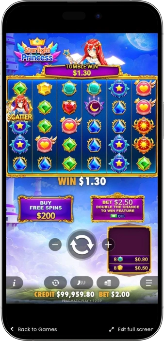
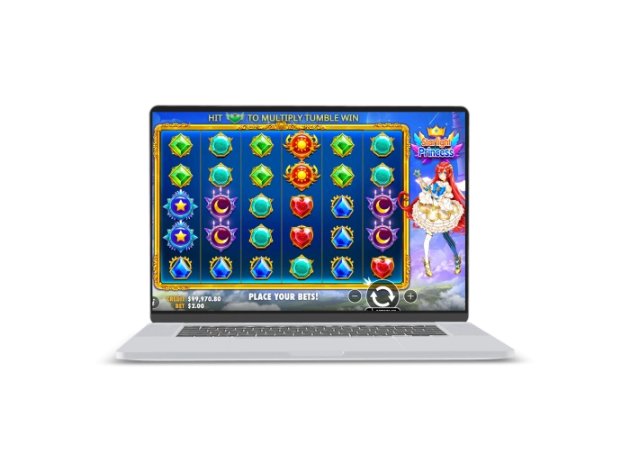

Exclusive welcome offer of
Exclusive welcome bonus of
Starlight Princess — 15 Free Spins, Multipliers up to 500x, Wins up to 5,000x
Top Casinos
Bonus Details
Casino
Bonuses
Rate
Free Spins
More Info
Get
Advantages
-
Bright anime visuals and dreamy sky theme
-
Wins pay anywhere across the grid
-
Cascades extend spins and boost excitement
-
Random multipliers reach an impressive 500x
-
Free spins build a persistent win multiplier
-
High max potential up to 5,000x
-
Simple rules and beginner-friendly game flow
Starlight Princess App



About Starlight Princess
Starlight Princess is the original anime-themed slot by Pragmatic Play, built on a 6x5 grid with a Pay Anywhere system that rewards 8 to 30 matching symbols anywhere on the screen.
The game feels fast and lively thanks to tumbling cascades that keep the same spin going after a win. Its defining feature is the random multiplier mechanic, with values ranging from 2x to 500x in both the base game and the bonus round. The bonus is triggered by landing 4 or more Scatter symbols and awards 15 free spins, where multipliers are added to a running total that can boost later wins.

This is a high-volatility slot, so the biggest moments usually come from a strong bonus sequence rather than from steady base-game payouts. Starlight Princess stands out for players who enjoy energetic gameplay, anime-inspired visuals, and the chance of a memorable high-multiplier hit.
Starlight Princess — slot review and features
Starlight Princess Key Features
Starlight Princess is a vivid anime-style video slot designed around tumbling wins, fast momentum, and strong bonus-round potential. Instead of traditional paylines, the game uses a Pay Anywhere format, so the total number of matching symbols matters more than their exact positions. The base game can already produce sharp spikes through random multipliers up to 500x, while the real long-form potential appears in free spins with a persistent global multiplier. This makes the slot especially attractive to players who enjoy volatile gameplay with explosive bonus upside.
Core characteristics
- • Provider: Pragmatic Play
- • Grid size: 6x5
- • Payout format: Pay Anywhere
- • Winning requirement: 8 or more matching symbols
- • Multiplier range: 2x to 500x
- • Bonus trigger: 4+ Scatter symbols
- • Free spins award: 15 free spins
- • Bonus retrigger: possible with 3 Scatters during free spins
- • Volatility: High
- • RTP: 96.50%
- • Maximum win: up to 5,000x the stake
- • Extra options: Tumbles, Ante Bet, Bonus Buy where available
Where to Play Starlight Princess
Starlight Princess is usually available on licensed online gaming platforms that work with Pragmatic Play. In most cases, the slot can be launched both in a desktop browser and on mobile devices such as smartphones and tablets. Reliable platforms typically provide access to the paytable, game rules, RTP details, and a switch between demo play and real-money mode. Depending on the region and operator settings, additional options like Ante Bet or Bonus Buy may also be enabled. The best experience usually comes from choosing platforms with clear navigation, transparent terms, and stable performance across devices.
Starlight Princess Demo Mode
The demo mode in Starlight Princess lets players explore the slot without risking real money. It usually keeps the same core mechanics as the standard version, including tumbles, the Pay Anywhere system, random multipliers from 2x to 500x, and the 15 free spins bonus feature. This makes demo play especially useful for understanding the slot’s pace, volatility, and bonus-round rhythm. It is also a practical way to test a comfortable stake level and learn the symbol values before switching to real-money play.
Starlight Princess Paytable
Below is a clear symbol payout table for the original Starlight Princess slot. All values are shown as multipliers of the base bet and are based on wins from 8–9, 10–11, and 12–30 matching symbols anywhere on the grid.
| Symbol | Combination | Payout |
|---|---|---|
| Sun | 8–9 | 10x |
| Sun | 10–11 | 25x |
| Sun | 12–30 | 50x |
| Heart | 8–9 | 2.5x |
| Heart | 10–11 | 10x |
| Heart | 12–30 | 25x |
| Moon | 8–9 | 2x |
| Moon | 10–11 | 5x |
| Moon | 12–30 | 15x |
| Star | 8–9 | 1.5x |
| Star | 10–11 | 2x |
| Star | 12–30 | 12x |
| Red Gem | 8–9 | 1x |
| Red Gem | 10–11 | 1.5x |
| Red Gem | 12–30 | 10x |
| Blue Gem | 8–9 | 0.8x |
| Blue Gem | 10–11 | 1.2x |
| Blue Gem | 12–30 | 8x |
| Green Gem | 8–9 | 0.5x |
| Green Gem | 10–11 | 1x |
| Green Gem | 12–30 | 5x |
| Turquoise Gem | 8–9 | 0.4x |
| Turquoise Gem | 10–11 | 0.9x |
| Turquoise Gem | 12–30 | 4x |
| Yellow Gem | 8–9 | 0.25x |
| Yellow Gem | 10–11 | 0.75x |
| Yellow Gem | 12–30 | 2x |
How Players Actually Win in Starlight Princess
There is no guaranteed winning method in Starlight Princess, but real gameplay experience shows a clear pattern: the biggest payouts usually come from a strong bonus round rather than from isolated base-game spins. In practice, the base game often acts as a setup phase, while the free spins round is where the slot truly opens up. The strongest sessions often follow the same path: 15 free spins are triggered, the global multiplier starts building early, and then one or two premium-symbol cascades connect at the right moment. When several multipliers land during winning tumbles in the bonus, even a medium-sized symbol hit can grow into a much larger payout. Experienced players also notice that patience matters here because the slot can run quietly for a while before producing a meaningful sequence. The smartest way to approach it is not to chase a secret formula, but to respect the volatility, manage the session properly, and wait for a genuinely strong bonus window.
Software Providers
Starlight Princess — bonuses, features, and how to play
Starlight Princess Bonuses and Special Offers
Starlight Princess stands out because it combines instant upside in the base game with long-form potential during free spins. Even a regular spin can grow sharply through random multipliers, while the bonus round pushes this even further through an accumulating multiplier system. The core bonus is not just about free spins, but about building a stronger and stronger total multiplier over time. On some platforms, extra in-game options may also change how often players reach the bonus. Around the slot itself, there are often external promotional offers such as deposit packages, cashback deals, or free-spin campaigns, although those always depend on the operator. This makes Starlight Princess appealing both for its built-in mechanics and for the promotional opportunities that may surround it.
Free Spins Bonus
- • 15 free spins are triggered by landing 4 or more Scatter symbols. During the feature, every multiplier that lands on a winning tumble is added to a persistent total. For example, if x5 and x20 appear early, the running bonus multiplier becomes x25 for later wins. This is the main feature where the slot usually shows its strongest potential.
Free Spins Retrigger
- • Additional free spins can be awarded during the bonus round. A common setup is +5 extra spins for 3 Scatters during free spins. For example, the original 15-spin round can expand to 20, 25, or more if the sequence keeps going. Retriggers become especially valuable when the global multiplier is already high.
Random Multipliers in the Base Game
- • Multiplier symbols ranging from 2x to 500x can land during the base game. If several multipliers appear in the same tumble, they are added together. For example, x10 + x25 + x50 become a total x85 applied to the tumble win. This keeps even regular spins capable of producing sudden standout moments.
Global Bonus Multiplier
- • This is the core internal engine of the bonus round. Every new winning multiplier increases the total for the rest of free spins. For example, a sequence of x3, then x7, then x15 creates a running x25 multiplier. That is why one strong bonus round can feel much bigger than the symbol values alone would suggest.
Ante Bet
- • On some platforms, Ante Bet raises the spin cost by about 25% while improving the chance of reaching the bonus round. For example, a base stake of 1 becomes 1.25 with Ante Bet enabled. It is useful for players focused on bonus access, but it also requires tighter bankroll control.
Bonus Buy
- • Where allowed, the bonus round can be purchased instantly instead of waiting for a natural trigger. A common cost is 100x the current base bet. For example, with a 0.50 stake the feature would cost 50, and with a 1.00 stake it would cost 100. It gives direct access to the slot’s strongest mechanic, but it also increases session risk significantly.
External Promotional Offers
- • Some operators may attach deposit bonuses, cashback, or free-spin packages to Starlight Princess. Typical examples can include 50%–100% deposit boosts, 20–100 free spins, or 5%–15% cashback when the game is part of a campaign. Slot tournaments and spin-based missions may also appear. These offers do not change the game math, but they can improve the overall session value.
Starlight Princess Free Spins and Multipliers Table
This table gives a quick overview of how free spins and multipliers work in the original Starlight Princess. These mechanics hold most of the slot’s real upside, so understanding them is essential before playing seriously.
| Feature | Condition | Result |
|---|---|---|
| Bonus trigger | 4+ Scatters in one tumble sequence | 15 free spins |
| Bonus retrigger | 3 Scatters during free spins | +5 free spins |
| Base-game multiplier | Special multiplier symbol lands | 2x to 500x |
| Multiple multipliers | Several symbols in one tumble | Values are added together |
| Bonus multiplier growth | Multiplier hits on a winning free-spin tumble | Added to the running total |
| Running multiplier duration | Entire free spins feature | Active until the bonus ends |
| Maximum win cap | Any game mode | Up to 5,000x stake |
How to Play Starlight Princess
Starlight Princess is easy to launch and understand on the surface, but it is still a high-volatility slot that reveals most of its strength during the bonus round. The key is to choose a sensible stake, track your balance carefully, and remember that wins are not formed through paylines but through symbol quantity anywhere on the grid. The better you understand tumbles and multipliers, the smoother and more controlled your session will feel.
Choose your stake
- • Set a comfortable spin value before you begin. In this slot, raising the bet too early can be risky because long stretches without a bonus are possible. A balanced starting stake gives you room to handle volatility more calmly.
Understand Pay Anywhere
- • There are no classic paylines here. A win is paid when 8 or more matching symbols land anywhere on the screen. Focus on symbol counts rather than line patterns.
Watch the tumbles
- • After a winning combination, those symbols disappear and new ones fall in. This means one spin can turn into several linked wins. Multiplier symbols become especially valuable during these tumble chains.
Treat the bonus as the main target
- • Most of the slot’s real upside is concentrated in free spins. Landing 4 or more Scatters awards 15 free spins, and multipliers during the feature build into a stronger total. That is where the game can become truly explosive.
Use Ante Bet carefully
- • Ante Bet raises the cost of each spin but can improve access to the bonus round. It should only be used when your bankroll supports a more aggressive approach. For a calmer session, the standard base-game mode is often more practical.
Check extra options first
- • Some platforms also offer Bonus Buy. It gives immediate access to free spins, but it requires a much larger bankroll buffer. Newer players are usually better off learning the game through natural spins first.
Starlight Princess Playing Tips
Starlight Princess rewards patience and session control more than rushed decisions. This is a slot where emotional play often becomes more expensive than technical mistakes. The strongest long-term approach usually comes from understanding the game’s high volatility and not expecting every short session to produce a major hit.
Bring a session-sized bankroll
- • High-volatility slots require enough balance to survive longer stretches between strong moments. The less pressure you place on each individual spin, the easier it becomes to wait for a quality bonus sequence. This matters even more when you are not using Bonus Buy.
Start in demo mode
- • Demo play helps you feel the game’s rhythm and see how tumbles and multipliers actually behave. It is also the fastest way to memorize the symbol set and bonus trigger. Once you understand the tempo, choosing a real-money stake becomes much easier.
Do not overvalue the base game
- • Regular spins can still surprise you, but the true strength of Starlight Princess usually shows up in free spins. Random base-game multipliers are exciting, yet the biggest upside generally comes when the bonus multiplier starts accumulating. Keep your expectations centered on the bonus structure.
Set limits before you start
- • Decide on both a session budget and a win target in advance. This helps you lock in a good result instead of giving it back through unnecessary extra spins. Discipline becomes especially valuable after a strong bonus round.
Use aggressive options carefully
- • Ante Bet and Bonus Buy can increase both pace and risk. These features make more sense when you are fully prepared for sharper swings. For a steadier session, standard spins are usually the better entry point.
Check the platform rules
- • RTP versions and extra features may vary by operator. It is useful to review the active game settings before you begin. That gives you a clearer idea of the exact conditions behind your session.
Starlight Princess Mistakes That Drain Your Bankroll
The biggest mistake in Starlight Princess is treating it like a calm, steady slot. This is a high-volatility game, and trying to force results too quickly usually leads to a depleted bankroll. Most losses happen not because the slot is complicated, but because players underestimate the cost of variance and overestimate how often strong bonuses will land.
Starting with stakes that are too high
- • Many players raise the bet too early without understanding how long dry stretches can last. A normal sequence without a bonus can then remove a large part of the bankroll very quickly. In Starlight Princess, this is one of the most common session-killing mistakes.
Chasing losses immediately
- • After a bad run, some players respond by increasing bet size and speeding up gameplay. That adds pressure to the balance and usually makes the downswing worse. In a volatile slot, this reaction is especially dangerous.
Misunderstanding where the real upside sits
- • Some players expect major payouts from every short base-game stretch. When that does not happen, they start forcing the session with bigger bets. In reality, the slot’s strongest potential lives in the free spins feature, while the base game can stay quiet for a while.
Overusing Ante Bet
- • Ante Bet can be useful, but it also increases the cost of every spin. If your bankroll is small, that extra cost can empty it much faster. More bonus access does not automatically mean better results.
Buying bonuses too often without a plan
- • Bonus Buy can speed up the session dramatically. A few weak bonus purchases in a row can burn through the balance much faster than natural spinning. This feature should only be used with a clearly defined loss limit.
Playing without stop limits
- • Without clear win and loss boundaries, players often stay in the session too long. Even a good bonus can be given back immediately through emotional extra spins. Limits are essential in a game with this level of swing.
Ignoring the active game setup
- • Some players never check which RTP version is active or whether extra features are enabled. That creates expectations that may not match the actual session conditions. Reviewing the rules before you start can prevent unnecessary mistakes.
Frequently Asked Questions
No, it uses a Pay Anywhere system instead. Wins are based on collecting enough matching symbols anywhere on the grid.
No, adjacency is not required. What matters is the total number of identical symbols visible on the screen at the same time.
No, the original Starlight Princess does not include a dedicated Wild symbol. Its main special elements are the Scatter symbol and the multiplier symbols.
No, visual speed does not change the game math. Every spin outcome is determined by random number generation.
No, the original Starlight Princess has a stated maximum win cap of up to 5,000x the stake. Even a very strong sequence still remains limited by that ceiling.
The base game can still produce good moments, but most of the real upside is usually connected to free spins. That is where the persistent multiplier system becomes most important.